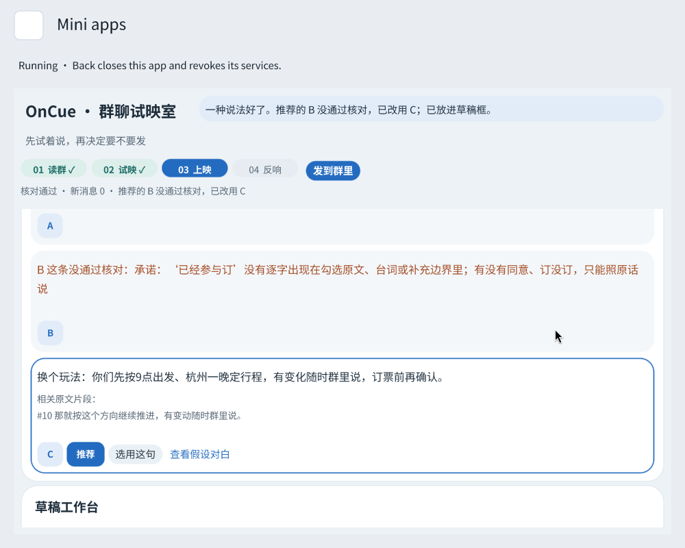
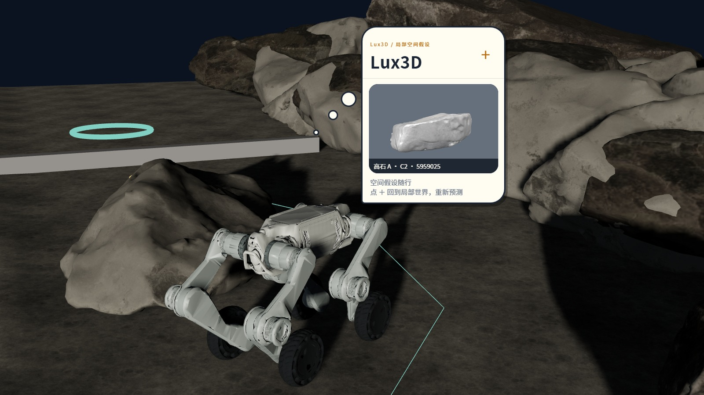

WebDCC一个工作台，三种原生 Agent。
在统一的网页界面中使用 DeepSeek Harness、Codex 和 Claude Code。保留原生交互与权限流程，连接会话、流式事件、文件与执行轨迹。
01 / ENGINEER · SELECTED WORK
在统一的网页界面中使用 DeepSeek Harness、Codex 和 Claude Code。保留原生交互与权限流程，连接会话、流式事件、文件与执行轨迹。

官方 Rinx · 运行截图
M20 · MuJoCo 仿真02 / RESEARCH · EXPLORATIONS
MACHINE LEARNING FOUNDATIONS
我的研究探索从机器学习基础、图神经网络与自监督学习展开。目前展示公开的代码复现与实验项目，后续将补充独立的研究经历与成果。
研究经历与论文 · 待补充
03 / ABOUT · BACKGROUND
我的工作横跨机器学习、软件工程与交互系统。从 Web 应用和论文复现出发，我逐渐将注意力放到真实任务中的系统设计：把能力接起来，让结果有依据，让交互可以被理解。
AI Agent 是我当前的一个重心。我关注 Harness 怎样组织上下文、获取外部信息，把模型接到垂直任务里；也参与 AI Native OS 的生态实践，构建个人 Agent 工具。与此同时，我继续探索空间交互、机器人仿真与研究工具。
在 GitHub 认识我图学习、半监督学习、自监督学习
PYTHON · PYTORCH · NUMPY原生 Agent 接入、工具编排、可追溯执行
TYPESCRIPT · REACT · NODE.JS局部空间假设、物理预演、可玩 Demo
LUX3D · MUJOCO · WEB学校 / 学位 / 专业方向 / 时间
单位 / 角色 / 时间 / 代表成果
04 / MILESTONES · OPEN SOURCE
基于自己的使用需求，完善个人 Agent 的网页入口、会话体验和执行过程的可见性。
打磨轮腿机器人试玩，保留实验依据和方法的边界。
作为外部贡献者参与 SoduWork，围绕会话、权限、桌面行为和验证流程提交修复；也通过 OnCue 完善 OctoSense 生态。
PROJECT MILESTONES
MiniMax · 意创万象大奖
GOSIM 2026 · cloudbrain 团队 · 31,680 分
智能进化 · Agent 能力评测赛道 · YCYC 团队
继续探索图学习与半监督节点分类
CNN、图神经网络、自监督学习与 Web 开发
LOOKING AHEAD
关注 Agent 在具身智能中的科学任务应用，让智能体在空间中观察、判断与行动。
探索语音优先的交互、空间感知计算与智能穿戴设备，让系统更自然地进入日常生活。
05 / LET’S CONNECT
关于机器学习、Agent、开源项目，
或一个值得动手试试的新问题。